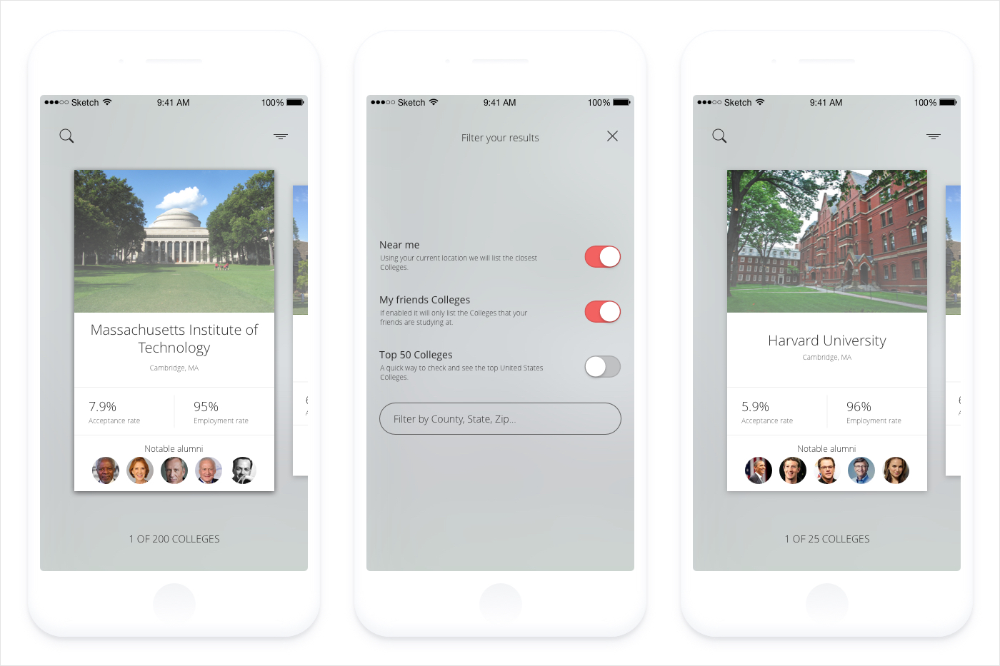
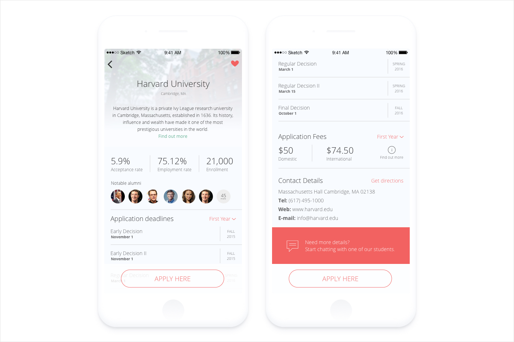
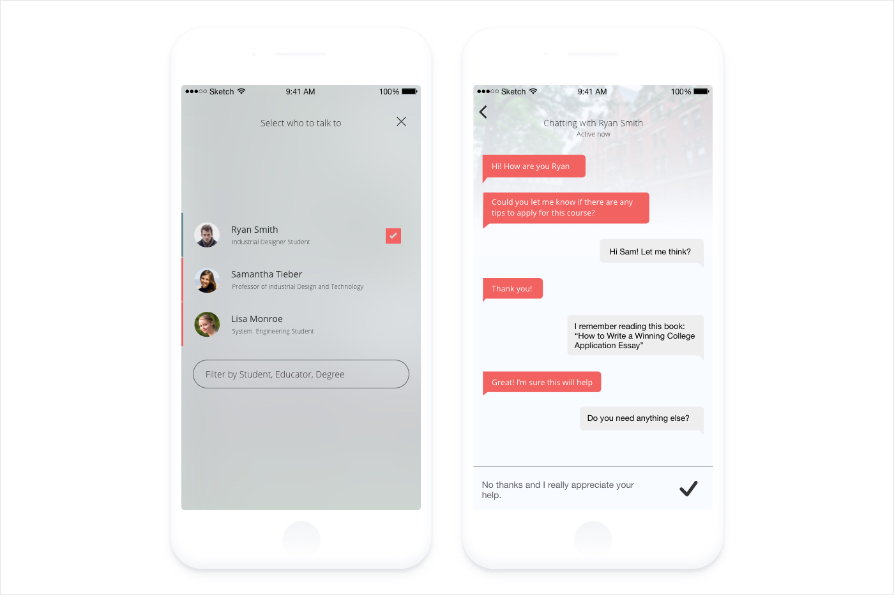

Common App onTrack is a companion tool to The Common Application. It helps students to research, select and apply for colleges while providing the support they need to successfully complete their applications.
The product of The Common Application serves students seeking to make easier for them to submit their applications to multiple colleges. The client wanted us to recreate the same experience for mobile devices. However, we asked ourselves what kind of mobile experience makes sense to the students in today's time?
Although we were asked to replicate the desktop experience on mobile devices, we stressed that creating a feature parity between both experiences was not strategic, not had the best interests of users at heart.
To define a desirable role for the app and how it would meet the needs of the students, I lead a design workshop with key stakeholders to help us understand their business challenges. Together we identified risks and aligned on expectations and constructed a shared vision for the app. The identified areas of opportunity became critical assumptions that formed the basis of the early user research strategy.
The discovery phase was a high‐intensity effort to know the Common App's users to uncover their needs, behavior, and pain‐points. After interviews and shadowing, we gathered very informative insights.
Senior Student

Senior Student
Junior Student
Senior Student
Our research revealed that the concept of 'application' represented something different for students. The students' motivations to apply for college differed, suggesting different requirements.
The outcome presented that students are looking for a mobile solution to fill their needs not only during the application process but also during activities that happen before and after.
I used experience mapping techniques to capture and communicate the students' end‐to‐end experience across various touch‐points with the application process. The map was a catalyst to represent the takeaways of the journey and helped identify the opportunities, pain points, and calls to action where we needed to focus our attention.
Knowing what was really important for the students, the types of terms and languages that align with their world, and where mobile fits into their application experience, I lead a group of 8 people with brainstorming, defining the problem space, unmet needs, and core use cases. Simultaneously we generated a lot of ideas and solicited buy-in within the team.
How might we help students search for colleges and their application process to learn more about it?
How might we encourage students to make the right selection based on what's important for them?
How might we make the interaction with the colleges more playful and useful for the students?
How might we help students to know the status of the application process?
Our vision for OnTrack was to be the best value to promote greater access to higher education, rather than being only a filling service to submit an application.
We did not want to offer an exhaustive catalog of schools, rather we wanted to focus on helping students discover the school they'll love.
Our students expect and trust us to know them. We envisioned the future of the college application to be deeply personalized to students' real-life interests.
Instead of wireframing, I opted to sketch my designs on paper. I use sketching techniques to work rapidly and bring major ideas into a more detailed proportional drawing. Sketching many concepts allowed me to form a wider view of the solution earlier to ensure a cohesive design.
To move forward with the design I created a set of wires for a person to look at and respond to. The wires were detailed enough which allowed me to bring our designs to life as a working prototype. In this case, our prototype didn't have to be very complex in order to learn what we wanted to know from the students.
With a prototype ready for user testing, I conducted 1-on-1 sessions to gather the students' feedback. The first iteration was very successful and the product team saw the value of bringing usability testing to the development process. As a result, we decided to have another set of sessions to collect more data to back up our design decisions with the stakeholders.
From the prototype testing, we were able to make a more confident decision to go with the card pagination interaction. We found, through observational testing, that users were able to comprehend the college offerings and liked the simple paging mechanism. The design solution alleviate anxiety while students navigate this complex and foreign system, not add to it.
In front of the stakeholders, I lead the explanation of the impact that this experience could create not only for their students but also for their customers (colleges). We decided to create an optimized solution for the primary use case which is research, selection, and application.
Simple search functionality that allows students to control their own destiny, with customized results based on their individual interests and goals.
The results feature a unique and engaging interface, along with each college's image, college acceptance and employment rates, and notable alumni.
Live chat functionality to obtain feedback, advice, and support from current college students, alumni, and educators.
All college applications are managed all in one place. Easy to see and check recommendations directly from the application view.

The app was well received within the organization. While it has not yet been released, it has already increased communication within the company by becoming a rallying point for strengthening the internal community.
Another by-product of this project was that it initialized an iterative agile product design and development process within the organization.